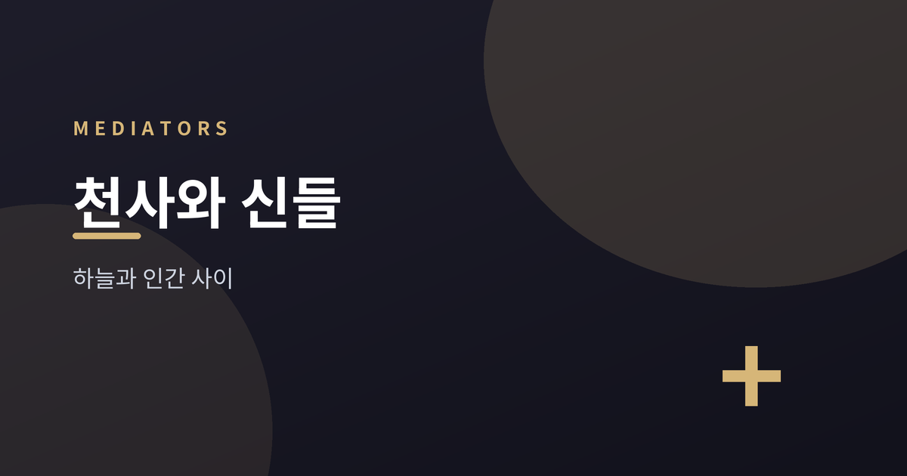
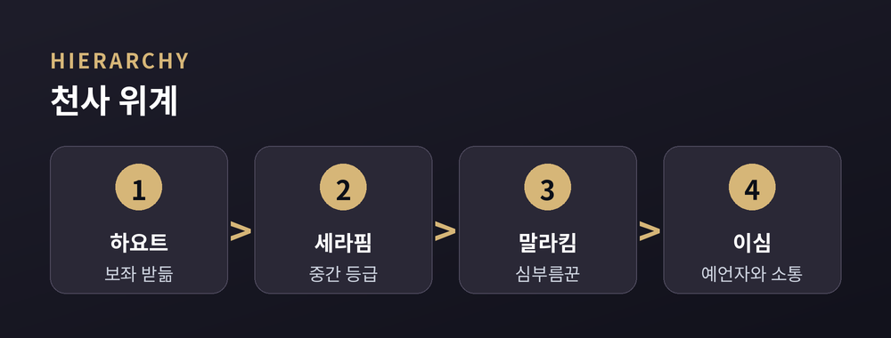

절대자와 인간 사이를 잇는 매개자들

여러 종교 전통에는 절대자와 인간 사이에 놓인 '중간 존재'가 등장합니다. 서로 다른 문화가 왜 비슷한 매개자를 상상했는지 살펴보면 흥미롭습니다. 이 글은 어느 신앙의 옳고 그름을 따지지 않고, 각 전통이 이들을 어떻게 설명해 왔는지 중립적으로 비교합니다.
유대교·기독교·이슬람은 공통적으로 '천사'를 신의 뜻을 전하고 사람을 지키는 존재로 봅니다. 히브리어 '말라크(malakh)'는 본래 '심부름꾼', 곧 메신저를 뜻합니다. 가브리엘은 세 전통 모두에서 하늘의 소식을 전하는 역할로 등장하는데요. 유대교에서는 다니엘을 돕는 존재로, 기독교에서는 예수와 세례 요한의 탄생을 알리는 존재로, 이슬람에서는 지브릴(Jibril)이라는 이름으로 무함마드에게 쿠란을 전한 존재로 그려집니다. 미카엘은 대체로 수호자·전사의 이미지가 강하며, 이슬람의 미카일(Mika'il)은 비와 양식 같은 물질적 은혜를 담당한다고 설명됩니다.
여러 전통은 이 존재들을 하나의 무리가 아니라 여러 층으로 상상했습니다. 유대교 사상가 마이모니데스는 천사를 열 등급으로 나누어, 신의 보좌를 받드는 하요트(Chayot)를 가장 높은 자리에, 사람 예언자와 직접 소통하는 이심(Ishim)을 가장 낮은 자리에 두었습니다. 세라핌과 케루빔 같은 이름도 이 위계 안에 배치됩니다. 등급이 높을수록 절대자에 가깝고, 낮을수록 인간 세계에 가깝다는 구도입니다.
"이름과 역할은 전통마다 달라도, '위와 아래를 잇는 사다리'라는 상상은 자주 되풀이됩니다."

인도·동아시아 전통에도 매개적 존재가 있습니다. 힌두교의 데바(deva)는 '빛나는' '천상의'라는 뜻에서 비롯한 말로, 자연의 힘을 주관하는 여러 신을 가리킵니다. 특히 불의 신 아그니와 소마는 인간과 하늘을 잇는 중개자로 여겨졌습니다. 불교에서도 데바(天)는 천상에 머무는 존재이지만, 여전히 윤회의 굴레 안에 있다고 설명됩니다. 한편 관세음보살처럼 깨달음에 이르렀으되 중생을 위해 세상에 남는 '보살'은, 절대적 진리와 고통받는 인간 사이에 선 자비의 매개자로 그려집니다.
고대 페르시아의 조로아스터교는 유일신 아후라 마즈다 아래에 아메샤 스펜타(Amesha Spenta), 곧 '거룩한 불멸자들'을 두었습니다. 좋은 마음·진리·헌신 같은 추상적 덕목이 이 존재들로 인격화되는데, 학계에서는 이들을 독립된 신이라기보다 아후라 마즈다의 발현으로 보는 관점이 널리 소개됩니다. 그 아래 야자타(yazata)는 '경배받을 만한 존재'로서 우주 질서를 지키는 매개자로 설명됩니다. 일부 연구자는 이 구도가 후대 아브라함 전통의 천사관에 영향을 주었다고 보기도 합니다.
전통마다 이름도, 성격도, 신학적 위상도 제각각입니다. 그러나 절대적인 것과 유한한 인간 사이에 다리를 놓으려는 상상은 여러 문화에서 되풀이됩니다. 옳고 그름의 문제라기보다, 인간이 초월을 이해해 온 오래된 방식의 하나로 바라볼 수 있겠습니다.
참고 소스